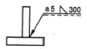
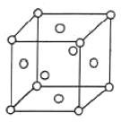

방사선비파괴검사산업기사(구) (2006-09-10 기출문제)
1과목: 방사선투과검사 시험
1. 방사선투과시험에서 필름에 200룩스의 광을 입사시켰더니 100룩스가 투과되었다. 사진농도는 얼마인가?
- 0.1
- 0.3
- 0.5
- 1.0
(정답률: 알수없음)

2. 침투탐상시험에서 사용하는 탐상제를 건식, 습식 및 속건식으로 분류하였다. 어느 것의 분류를 의미하는가?
- 세척제
- 침투제
- 유화제
- 현상제
(정답률: 알수없음)
3. 물세척이 불가능한 대형구조물의 부분검사에 가장 적합한 침투탐상시험법은?
- 수세성 형광침투탐상시험법
- 수세성 염색침투탐상시험법
- 후유화성 형광침투탐상시험법
- 용제제거성 염색침투탐상시험법
(정답률: 알수없음)
4. 방사선 투과사진의 관찰시, 결함을 식별하기 위한 관찰 조건과 직접적인 관계가 아닌 것은?
- 실내의 밝기
- 관찰자의 시력
- 투과도계의 형태
- 필름관찰기의 밝기
(정답률: 알수없음)
5. 좁은 조사범위 촬영법에서 방사선투과사진의 상질을 개선하기 위한 내용으로 알맞지 않은 것은?
- 조리개로 조사범위를 좁힌다.
- 차폐마스크로 조사범위를 좁힌다.
- 시험체-필름간 거리를 줄인다.
- 적절한 촬영배치로 산란선을 줄인다.
(정답률: 알수없음)
6. TIG 용접한 감용접부를 방사선투과 사진촬영 결과, 필름용접선상에 날카로운 흰 반점이 생겼다면 어떤 결함으로 해석되는가?
- 기공
- 반점으로 현상처리 중 발생한 인공결함
- 텅스텐 혼입
- 과다 용입
(정답률: 알수없음)
7. X선 발생장치로 120kW를 작동시킬 때 X선 최소 파장[Å]은 약 얼마인가?
- 0.1
- 0.5
- 1.0
- 1.5
(정답률: 알수없음)
8. 방사선이 물질을 투과할 때 산란 방사선이 발생한다. 이 산란 방사선의 파장을 일차 방사선과 비교한 것으로 옳은 설명은?
- 일차 방사선보다 파장이 짧다.
- 일차 방사선보다 파장이 길다.
- 일차 방사선과 동일 파장이다.
- 물질에 다라 일차 방사선보다 파장이 짧을 수도, 길 수도 있다.
(정답률: 알수없음)
9. 일반적으로 방사선투과검사용 선원으로 사용되지 않는 동위원소는?
- Ra-226
- Co-60
- Ir-192
- Tm-170
(정답률: 알수없음)
10. 비파괴검사의 종류와 이에 대한 설명으로 틀린 것은?
- 초음파탐상시험은 시험체 내부결함의 검출에 적합하다.
- 누설시험은 시험체 내부와 외부의 결합 검출에 적합하다.
- 자분탐상시험은 감자성체의 표층부 결함 검출에 적합하다.
- 방사선투과시험은 용접부의 블로홀(blow hole)검출에 적합하다.
(정답률: 알수없음)
11. 선원과 필름 사이 정중앙에 핀홀이 있는 납판을 놓고 촬영 하는 경우가 있는데 이는 무엇을 하기 위함인가?
- 초점의 치수를 알아보기 위해
- X선의 최대 강도를 측정키 위해
- 산란방사선을 여과시키 위해
- X선을 완화시키기 위해
(정답률: 알수없음)
12. 방사선투과시험에서 피사체 콘트라스트에 영향을 미치는 인자가 아닌 것은?
- 방사선의 선질
- 시험체의 두께
- 현상댁의 강도
- 산란 방사선
(정답률: 알수없음)
13. X선 발생장치에서 방사선의 강도가 X선 축에서 어느 정도의 경사를 가질 때 최대의 경사효과(Heel effect)를 얻을 수 있는가?
- 약 45°
- 약 30°
- 약 20°
- 약 10°
(정답률: 알수없음)
14. 방사선투과사진 필름의 자동현상기를 이용한 현상에서 다음 중 생략할 수 있는 과정은?
- 현상처리
- 정지처리
- 정착처리
- 수세처리
(정답률: 알수없음)
15. 방사선투과시험 중 결함의 깊이를 근사적으로 알 수 있는 검사법은?
- 형광 투시법
- 회전 투과검사법
- 연속 투과검사법
- 입체 방사선투과검사법
(정답률: 알수없음)
16. 엑스선의 유효 에너지에 대한 설명으로 옳지 않은 것은?
- 백색 엑스선의 평균 에너지를 말한다.
- 평균 선흡수계수로 구할 수 있다.
- 시험체의 두께가 증가하면 유효에너지는 증가한다.
- 유효에너지가 증가하면 필름의 감도계수가 커진다.
(정답률: 알수없음)
17. 다음 중 개인 피폭선량계로서 누적선량의 측정에 가장 적합한 것은?
- 전리함
- 비례계수관
- G-M 계수관
- 열형광 선량계
(정답률: 알수없음)
18. 방사선투과검사용 현상제의 구성 성분으로 잘못 짝지워진 것은?
- 페니든 - 환원제
- 하이드로퀴논 - 환원제
- 탄산나트륨 - 보항제
- 브롬화칼륨 - 억제제
(정답률: 알수없음)
19. 다음 중 시험체의 두께측정에 이용할 수 없는 비파괴검사법은?
- 방사선투과시험법
- 초음파탐상시험법
- 와전류탐상시험법
- 자분탐상시험법
(정답률: 알수없음)
20. 파장이 6.6×10-12m인 X선의 에너지[keV]는 대략 얼마인가? (단, 프랑크상수(h)=6.6×10-34Jㆍs, 1eV = 1.6×10-19J, 광속은 3×108m/s 이다.)
- 155
- 187
- 224
- 276
(정답률: 알수없음)
2과목: 방사선투과검사 시험
21. 방사선투과검사시 현상온도가 낮을 때 나타나는 현상은?
- 콘트라스트가 낮아진다.
- 농도가 높아진다.
- 그물모양의 무늬가 발생한다.
- 노란 얼룩이 발생한다.
(정답률: 알수없음)
22. 한 개의 카세트에 감광속도가 다른 두 개 이상의 필름을 넣고 방사선투과시험하는 일차적인 목적은?
- 산란선을 방지하기 위하여
- 필름의 강도를 비교하기 위하여
- 부정확한 투과사진의 노출시간을 보정하기 위해서
- 한번의 노출로 두께, 범위가 다른 시험편을 전부 시험하기 위하여
(정답률: 알수없음)
23. 다음 특수 방사선투과시험법의 인자들을 잘못 연결한 것은?
- 형광투시검사(Fluroscopy) - 형광판
- X선 확대촬영장치 - 미소 초점
- 전자방사선 투과검사법(Electron radiography) - X선 조사된 연박으로부터 방출되는 전자
- 자동방사선투과검사(Auto radiography) - 전산자동화장치에 의한 X선 영상
(정답률: 알수없음)
24. 연박스크린의 역할이 아닌 것은?
- 필름에 도달하는 전체방사선의 강도를 증대시킨다.
- 산란방사선의 영향을 감소시킨다.
- 필름의 사진작용을 증대시킨다.
- 명암도를 증대시킨다.
(정답률: 알수없음)
25. V개선된 맞대기용접부에 초층 용접이 과잉 용입되어 국적으로 뒤쪽에서 떨어져 나간 것을 무엇이라 하는가?
- 오버랩(Overlap)
- 용낙(Burn through)
- 과잉침투(Excesslve penetration)
- 용입불량(Incomplete penetration)
(정답률: 알수없음)
26. X선 발생장치의 방사구에 부착된 필터의 역할은?
- 2차 방사선을 증가시켜 X-선의 강도를 증대시킨다.
- 연질방사선을 만들어 주기 위해 파장이 짧은 방사선을 걸러준다.
- X-선의 감도를 변형시킬 수 있는 방법을 제공한다.
- 파장이 긴 X-선을 제거하여 산란선의 발생을 줄여준다.
(정답률: 알수없음)
27. 평판맞대기 용접부에 방사선투과검사를 수행하여 용합부 결함이 있는지를 찾고자 한다. 방사선의 방향을 어떻게 해야 방사선 투과사진에 유합부족 결함이 잘 나타나겠는가?
- 평판 용접부에 수직인 방향으로 방사선 조사
- 평판 용접부와 평행한 방향으로 방사선 조사
- 예측되는 결함방향과 평행인 방향으로 방사선 조사
- 예측되는 결함방향과 수직인 방향으로 방사선 조사
(정답률: 알수없음)
28. 다음 중 결함 형태가 날카롭기 때문에 결함주위에 집중되는 응력이 커지므로 성장이 가장 쉽게 예상되는 결함의 종류는?
- 가공
- 터짐
- 파이프
- 슬래그개입
(정답률: 알수없음)
29. 다음 방사선 통위원소 중 일반적으로 수용성 화합물로 판매되기 때문에 물에 녹아 누설될 가능성이 있는 것은?
- Co-60
- Cs-137
- Th-170
- Ir-192
(정답률: 알수없음)
30. 방사선투과사진 촬영시 불선명도(Ug)를 최소화하기 위한 것이 아닌 것은?
- 선원의 크기는 가능한 한 작게 한다.
- 선원-시험체간 거리는 가능한 한 멀리 한다.
- 시험체-필름간 거리는 가능한 한 짧게 한다.
- 선원의 비방사능(specltic activity)을 낮게 한다.
(정답률: 알수없음)
31. 선원의 크기 3mm, 선원과 시험체간 거리 20cm, 시험체와 필름간 거리 10mm 라면 기하학적 불선명도는?
- 0.15mm
- 0.6mm
- 1.5mm
- 6.0mm
(정답률: 알수없음)
32. 방사선투과사진 상에 나타난 의사지시로서 경미한 주름(frilling) 잡힘은 어떤 경우에 발생하는가?
- 정전기 마크에 의해 발생
- 노출 후의 부적절한 취급에 의해 발생
- 오염된 정착액에 의해 발생
- 연박 스크린의 긁힘 자국에 의해 발생
(정답률: 알수없음)
33. 선원과 필름 간의 거리를 60cm 로 하고 60초의 노출시간을 주어 양질의 투과사진을 얻었다. 기타 다른 조건을 동일하게 하고 거리를 30cm로 한다면 동일한 상질의 투과사진을 얻기 위한 노출시간은?
- 120초
- 30초
- 15초
- 240초
(정답률: 알수없음)
34. Ir-192 선원으로 20mm의 강판을 방사선투과검사시 방사선 안전관리에 관한 사항으로 부적절한 것은?
- 방사선이 인체 및 장치에 피해가 없도록 차폐조치를 한다.
- 방사선원으로부터 거리를 멀게하여 인체의 방사선 피폭량을 줄인다.
- 신속, 정확하게 작업을 수행하여 방사선 피폭량을 최소화한다.
- 필름뱃지와 같은 안전장구를 착용하면 방사선 차폐효과라 있으므로 선원에 근접 가능하다.
(정답률: 알수없음)
35. 방사선의 감마선에너지가 약 0.66MeV 인 동위원소는?
- Tm-170
- Ir-192
- Cs-137
- Co-60
(정답률: 알수없음)
36. 방사선투과검사에서 선명하고 실물과 가장 가까운 상을 얻기 위한 기본 원칙을 설명한 것 중 틀린 것은?
- 초점은 다른 고려사항이 허용하는 한 작아야 한다.
- 초점과 검사체와의 거리는 가능한 한 멀게 해야 한다.
- 필름은 가능한 한 검사체와 거리를 멀리하여 평행하게 놓아야 한다.
- 방사선 빔은 가능한 한 필름과 수직이 되도록 유지해야 한다.
(정답률: 알수없음)
37. 주물에서 나타날 수 있는 결함 중 미스런(misrun)에 관한 설명으로 옳은 것은?
- 형태는 둥글거나 매끄럽고 길쭉한 모양으로 생긴다.
- 용탕 온도 및 합금 배합의 부적절한 조작으로 발생하며 스폰지 모양을 갖고 있다.
- 용탕이 주형내를 충분히 돌지 못하고 주물면에 용탕이 마주친 경계가 생기는 것을 말한다.
- 용탕의 온도가 낮아진 경우나 주형에 의해 흐름의 저항이 커서 일부에 용탕의 부족한 부분이 생기는 경우를 말한다.
(정답률: 알수없음)
38. 노출된 방사선투과사진의 현상과정 중 정지처리에 관한 설명이다. 틀린 것은?
- 현상액의 정착액으로의 혼입을 방지하는 역할을 한다.
- 일반적으로 빙초산 3% 수용액을 사용한다.
- 액의 온도는 18℃~22℃ 사이가 적당하다.
- 처리시간은 5분 이상이 적당하다.
(정답률: 알수없음)
39. 필름 콘트라스트에 관한 다음 설명 중 잘못된 것은?
- 필름 특성곡선의 기울기를 말한다.
- 필름의 종류, 현상시간 및 농도에 영향을 받는다.
- 사용된 방사선의 파장 및 분포와는 서로 독립적이다.
- 현상액의 온도 및 교반과는 독립적이므로 영향이 없다.
(정답률: 알수없음)
40. 정적 및 동적 현상을 방사선의 투과로 인한 필름 등에 사진으로 만들지 않고 바로 눈이나 TV 모니터로 관찰되는 방사선투과시험법을 무엇이라 하는가?
- 중성자 래디오그래피
- 엘렉트론 래디오그래피
- 실시간 래디오그래피
- 제로 래디오그래피
(정답률: 알수없음)
3과목: 방사선안전관리, 관련규격 및 컴퓨터활용
41. 원자력법시행령에서 규정한 일반인의 수정체에 대한 등기선량 한도로 옳은 것은?
- 연간 10mSv
- 연간 12mSv
- 연간 15mSv
- 연간 50mSv
(정답률: 알수없음)
42. 어떤 γ선원에 대한 납의 1/10가층이 1인치일 때 그 선원으로 부터 24인치 떨어진 거리에서의 선량율이 500R/h였다면, 24인치 ㄱ리에서의 선량율을 5mR/h로 줄이려면 필요로하게 되는 납의 두께는 얼마인가?
- 2인치
- 5인치
- 10인치
- 14인치
(정답률: 알수없음)
43. 다음 중 방사선에 대한 반가층의 두께가 가장 얇은 차폐재는?
- 우라늄
- 철
- 납
- 콘크리트
(정답률: 알수없음)
44. 보일러 및 압력용기의 비파괴검사(ASME Sec.V)에서 채택하고 있는 유공형 투과도계의 최저 구멍(hole)의 직경은?
- 1T : 0.020인치(0.508mm)
- 1T : 0.015인치(0.381mm)
- 1T : 0.010인치(0.254mm)
- 1T : 0.0⑤인치(0.127mm)
(정답률: 알수없음)
45. 주강품의 방사선투과시험 방법(KS D 0227)에 따라 복합필름법으로 촬영하고자 한다. 투과사진 2매를 겹쳐서 관찰하고자 하는 경우 각각 필름의 투과사진 농도는?
- 1.0 이상 3.5 이하
- 1.0 이상 2.5 이하
- 0.8 이상 4.0 이하
- 0.8 이상 2.5 이하
(정답률: 알수없음)
46. ASME Sec.V Art.2에서 320kV이하의 X선발생장치의 초점크기를 측정하는 방법은?
- 단벽촬영법
- 핀홀법
- 이중벽촬영법
- 섹션법
(정답률: 알수없음)
47. 원자력법시행령에서 규정한 방사선구역 수시출입자의 연간 유호선량환도(밀리시버트)는?
- 12
- 15
- 50
- 150
(정답률: 알수없음)
48. 다음 중 방사선에 의한 장해가 아닌 것은?
- 유전적 결함
- 백혈병
- 암
- 면역 결핍증
(정답률: 알수없음)
49. 어던 방사성 동위원소로 부터 2m 떨어진 곳의 선량율이 시간당 8mR이었다. 이 동위원소로부터 4m 떨어진 지점의 선량율[mR/h]은?
- 1
- 2
- 4
- 6
(정답률: 알수없음)
50. 강용접 이음부의 방사선투과시험 방법(KS B 0845)에 따른 촬영배치에 관한 설명으로, 투과사진의 요구성질을 B급으로 하고 시험부 유효길이를 300mm로 할 때 선원과 시험부의 선원측 표면간 거리는 얼마 이상이어야 하는가?
- 225mm
- 600mm
- 900mm
- 90mm
(정답률: 알수없음)
51. 강용접 이음부의 방사선투과시험 방법(KS B 0845)에 따라 검사할 때 다음 중 계조계를 사용해야 하는 경우는?
- 두께 52mm인 강판의 맞대기 용접부
- 바깥지름 120mm인 강판의 원둘레 용접부
- T1재와 T2재의 두께차가 20mm인 T용접부
- T1재와 T2재의 두께차가 8mm인 T용접부
(정답률: 알수없음)
52. 방사성통위원소등을 이동사용하는 경우 지켜야 할 사항과 거리가 먼 것은? (단, 방사선안전관리등의 기술기준에 관한 규칙-과기부형 제93호에 따른다.)
- 방사선관리구역안에서 사용할 것
- 감마선조사장치를 사용하는 경우는 클리매타를 장착하고 사용할 것
- 방사선작업은 반드시 2인 이상을 1조로 편성하여 수행할 것
- 일시적 사용장소에는 사용을 폐지한 선원을 한 곳에 보관하도록 할 것
(정답률: 알수없음)
53. 티탄 용접부의 방사선투과시험 방법(KS D 0239)에 규정하고 있는 투과도계의 종류로 맞는 것은?
- F02
- S02
- T02
- A02
(정답률: 알수없음)
54. 보일러 및 압력용기의 방사선투과검사(ASME Sec. V Art.2)에서 단벽관찰시 구간표시 위치에 관한 것으로 필름 측에 구간표시를 부착해도 될 경우는?
- 평평한 기기 또는 원통형이나 원주형 기기의 중축이음부
- 곡률이 있거나 구형인 기기의 오목 면이 선원을 향하고 있고, 선원-시험체간의 거리가 기기의 내측 반지름보다 클 때
- 곡률이 있거나 구형인 기기의 볼록한 면이 선원을 향하고 있을 때
- 투과사진이 구간표시 적용범위 이외를 나타낼 때
(정답률: 알수없음)
55. 보일러 및 압력용기의 방사선투과검사(ASME Sec.V Art)에서 관의 전 원주 용접부위를 이중벽 단상촬영법으로 검사하고자 할 때 촬영 방법에 대한 설명으로 맞는 것은?
- 관의 바깥지름이 89mm(3.5인치) 이상일 때는 90도 간격으로 최소한 4번 이상 촬영해야 한다.
- 관의 바깥지름이 89mm(3.5인치) 이상일 떄는 120도 간격으로 최소한 3번의 촬영을 해야 한다.
- 관의 바깥지름이 76mm(3인치) 이상일 때는 90도 간격으로 최소한 4번의 촬영을 해야 한다.
- 관의 바깥지름이 76mm(3인치) 이상일 떄는 120도 간격으로 최소한 3번의 촬영을 해야한다.
(정답률: 알수없음)
56. 다음 중 광섬유나 동축케이블 등을 지칭하는 것은?
- 통신규약
- 통신방식
- 전송매체
- 모뎀
(정답률: 알수없음)
57. 다음 중 문서편집용 프로그램이 아닌 것은?
- 메모장
- MS-word
- 한글 97
- Photo-shop
(정답률: 알수없음)
58. 인터넷에서 메일을 보내기 위한 통신 프로토콜은?
- TCP/IP
- SLIP
- PPP
- SMTP
(정답률: 알수없음)
59. 윈도우 운영체제에서 디스크의 단편화를 제거하기 위한 목적의 프로그램은?
- 디스크 검사
- 디스크 정리
- 디스크 조각모음
- 디스크 공간 늘림
(정답률: 알수없음)
60. 인터넷에서 사용되는 프로토콜은?
- HTML
- SGML
- TCP/IP
- XML
(정답률: 알수없음)
4과목: 금속재료 및 용접일반
61. 피복 아크용접봉 E4301에서 43이 의미하는 것은?
- 용착금속의 최저 연장강도
- 피복제의 종류
- 용접봉의 최대 사용전류
- 용접자세
(정답률: 알수없음)
62. 다음 용접법 중 전기 저항 용접인 것은?
- 업셋 맞대기 용접
- 전자빔 용접
- 피복 아크 용접
- 탄산가스 용접
(정답률: 알수없음)
63. 다음 중 점용접의 3대 요소가 아닌 것은?
- 도전율
- 용접 전류
- 가압력
- 통진 시간
(정답률: 알수없음)
64. 불활성 가스 금속 아크 용접에 대한 설명으로 틀린 것은?
- 비소모성 용가재를 사용한다.
- 알루미늄이나 스테인리스강 용접에 많이 이용한다.
- 정전압 특성 또는 상승 특성의 직류용접기가 사용된다.
- 아크 자기제어 특성이 있다.
(정답률: 알수없음)
65. 용접시 발생하는 전류 응력을 경감시키기 위한 방법이 아닌 것은?
- 최대한으로 용접 구조물을 구축하여 용접시공할 것
- 용착 금속량을 가능한 한 최소한으로 할 것
- 적당한 용착법과 용접 순서를 지킬 것
- 용접 전에 예열을 할 것
(정답률: 알수없음)
66. 원형판 롤러전극 사이에 띠용접물을 끼워 전극에 압력을 주면서 전극을 회전시켜 연속적으로 점 용접을 반복하는 방법의 용접은?
- 프로젠션 용접법
- 퍼커센 용접법
- 맞대기 용접법
- 심 용접법
(정답률: 알수없음)
67. 산소-아세틸렌 가스 용접에 있어서 표준 불꽃으로 가변압식 저압용 토치 200번 팁(tip)을 사용하여 3시간 용접했을 때 소모된 아세틸렌 가스 량은 몇 리터인가?
- 66
- 200
- 600
- 1200
(정답률: 알수없음)
68. 용착법 중 다중쌓기 방법이 아닌 것은?
- 덧살 올림법
- 캐스케이드법
- 전진 블록법
- 피닝법
(정답률: 알수없음)
69. 보기와 같은 KS 용접도시기호에 대한 설명으로 올바른 것은?

- 홈의 깊이 5mm
- 화살표 반대쪽 용접
- 루트 간격 5mm
- 필릿 용접 목 두께 5mm
(정답률: 알수없음)
70. 용접봉 선택이 불량하고 용접전류가 너무 낮을 때에 생기는 결함으로 가장 적합한 것은?
- 기공
- 균열
- 오버 랩
- 언더 컷
(정답률: 알수없음)
71. Al - Cu - Mg - Mn 계 합금으로 시효경화에 의해 기계적 성질이 향상되며 항공기 재료로 많이 사용되는 합금은?
- 화이트메탈
- 하이드로날륨
- 실루민
- 투랄루민
(정답률: 알수없음)
72. WC, TIC, TaC의 분말에 Co를 결합재로 사용하여 1,500℃에서 소결하여 만든 합금은?
- 초경합금
- 세라믹
- 켈엣 메탈
- 알민
(정답률: 알수없음)
73. 비정질합금의 제조법이 아닌 것은?
- 화학도금법
- 금속가스의 종착법
- 냉간가공법
- 금속액체의 액체급냉법
(정답률: 알수없음)
74. 금속의 변태점 측정법이 아닌 것은?
- 전기저항법
- 열팽창법
- 자기분석법
- 크리프검사법
(정답률: 알수없음)
75. 금속의 일반적 특성 중 틀린 것은?
- 열과 전기의 양도체이다.
- 소성변형성이 있어 가공하기 쉽다.
- 상온에서 고체이며, 결정체이다. (수은은 제외)
- 이온화하면 음(-)이온이 된다.
(정답률: 알수없음)
76. Fe-C 상태도에서 γ고용체에 대한 Fe3C의 용해 합의 곡선이며, γ고용체에서 Fe3C가 석출되기 시작하는 온도선을 무엇이라 하는가?
- Acm선
- A2선
- 공정선
- 포정선
(정답률: 알수없음)
77. Pb나 S를 첨가하여 절삭성을 향상시킨 특수강은?
- 내부식감
- 쾌삭강
- 내열강
- 내마모강
(정답률: 알수없음)
78. 단면적이 5mm2인 재료에 하중이 600kgf이 걸렸다. 이 재료의 인장응력(kgf/mm2)은?
- 100
- 110
- 120
- 130
(정답률: 알수없음)
79. Cu - Be 합금(베릴륨 등)에 대한 설명으로 틀린 것은?
- 석출경화성 합금으로 홍체화처리가 필요하다.
- 통합금 중 강도와 경도가 최대이다.
- Be의 첨가량은 10~15% 이다.
- 전도율이 좋으므로 고도전성 재료로 활용된다.
(정답률: 알수없음)
80. 그림과 같은 단위격자를 갖는 금속은?

- Mo, Cr, Fe, K
- Ag, Al, Au, Cu
- Co, Mg, Ti, Zn
- Pb, Be, Cd, V
(정답률: 알수없음)